제안 배경
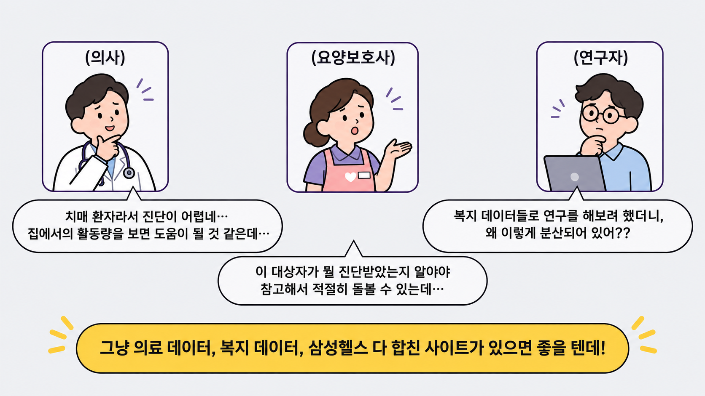
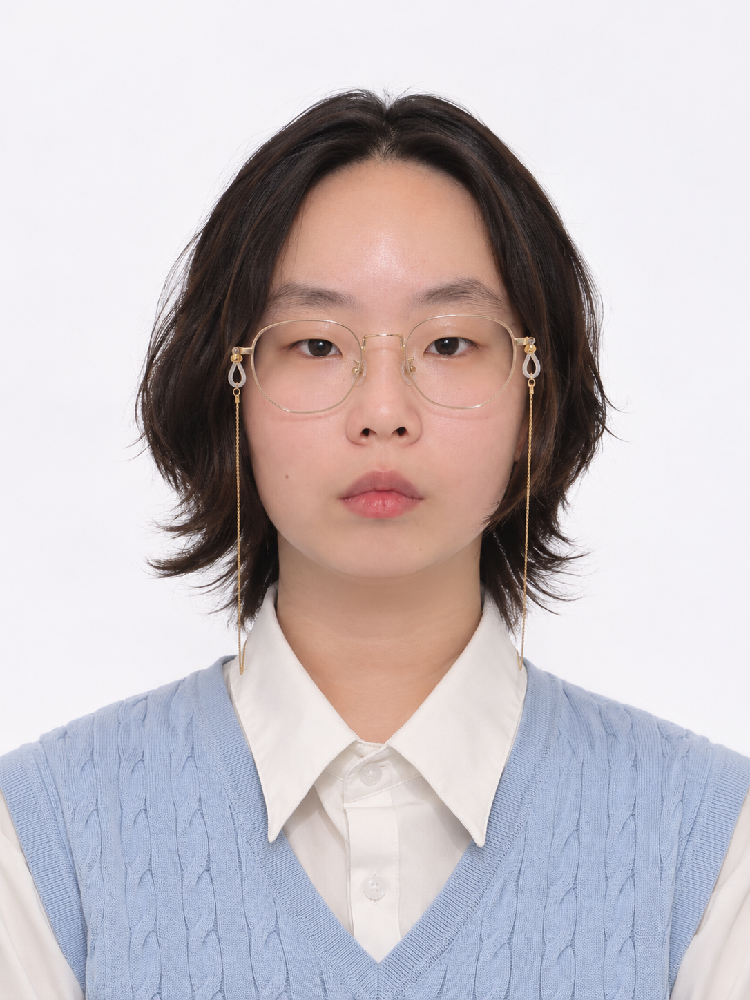
원하는 활동을 자유롭게, 팀원들과 함께!
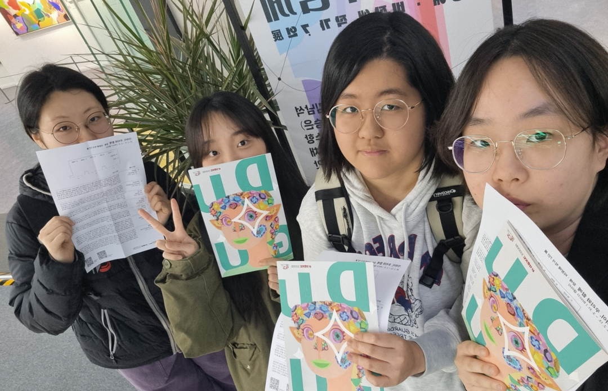
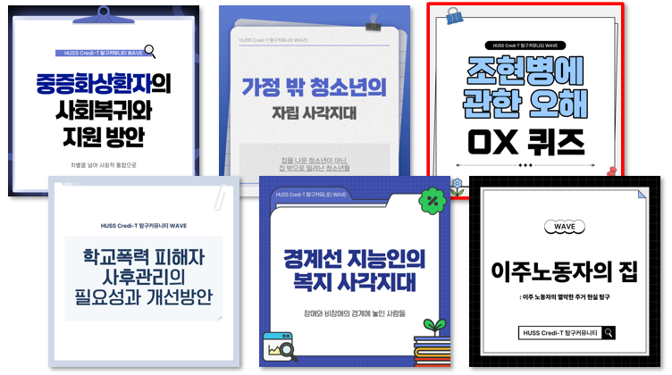
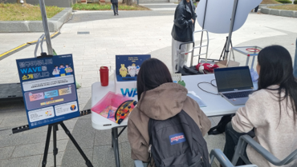
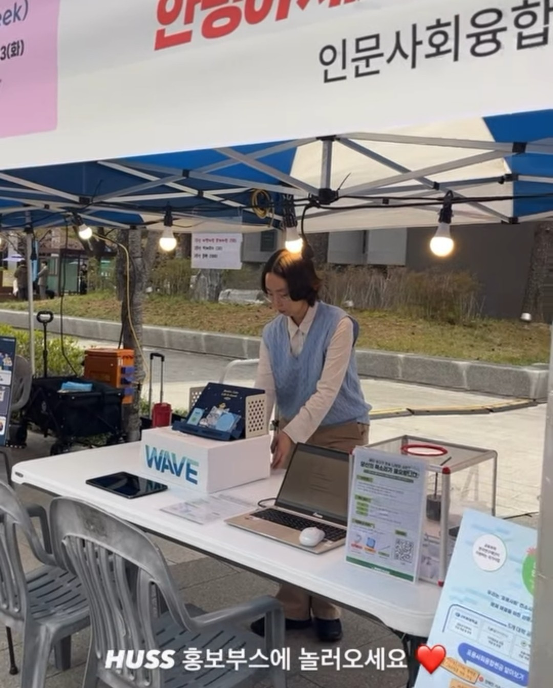
이외 1학기 탐구커뮤니티 성과발표회 발표자, 에브리타임 혐오표현 조사(기간: 7~8월) 역할을 맡았습니다.
고난의 순간에 이순신 장군은 어떻게 생각하고 이겨나갔을까?
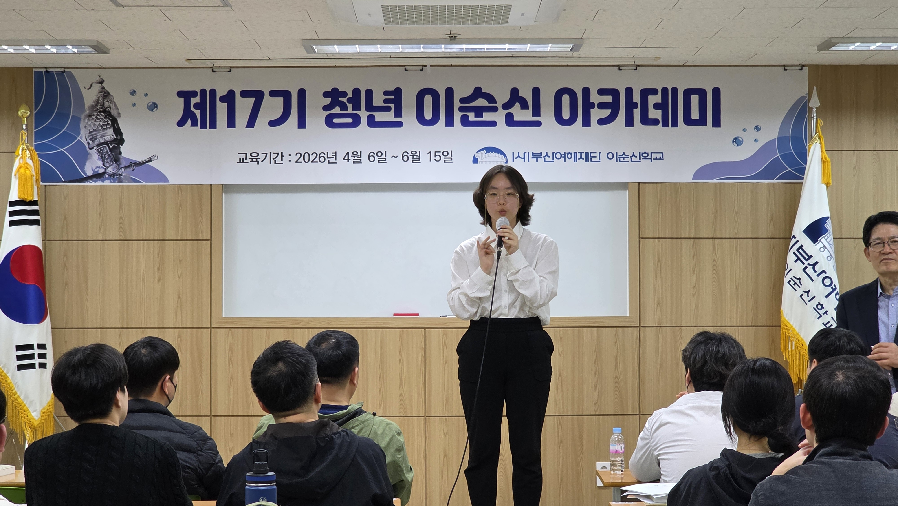
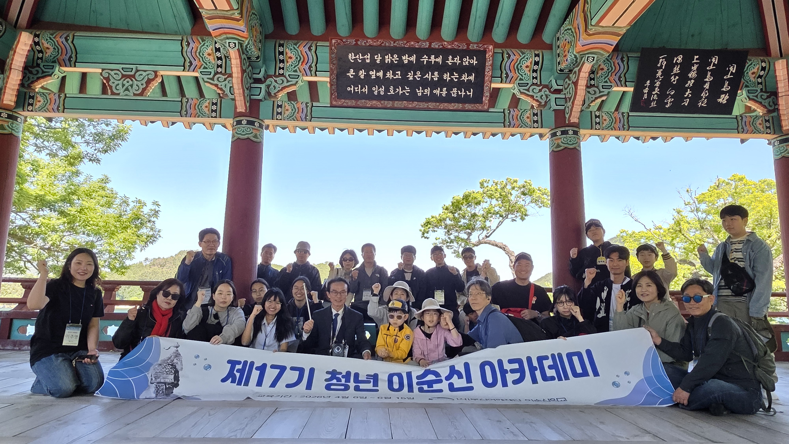
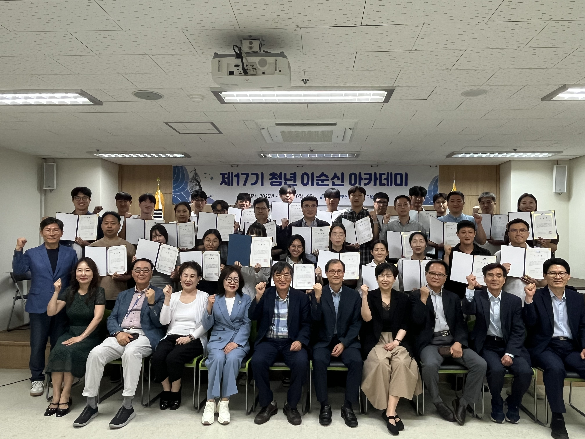
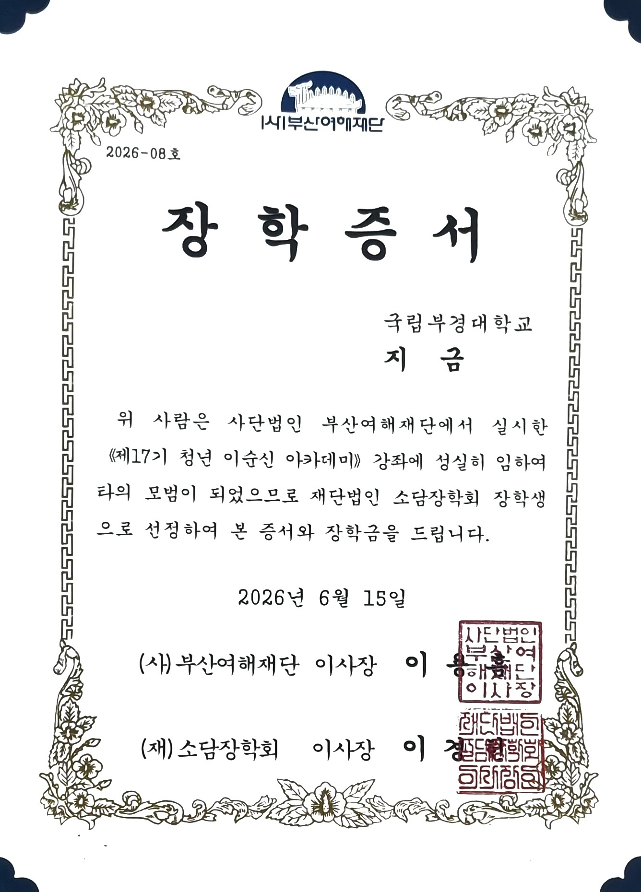
이번 년도에는 무력감을 느낄 때마다 저와는 비교도 안 될 고난에 처했던 이순신 장군을 떠올리며
사랑 정서 정의 자력 4가지 삶의 원칙으로 더 단단해질 수 있었습니다.
신념을 발화하다
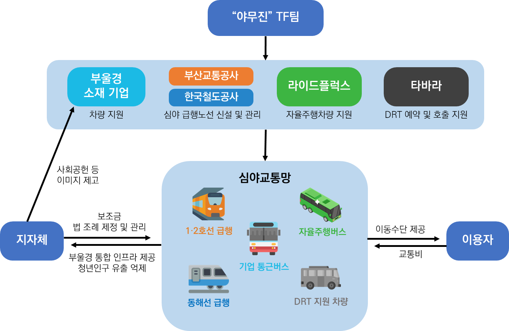
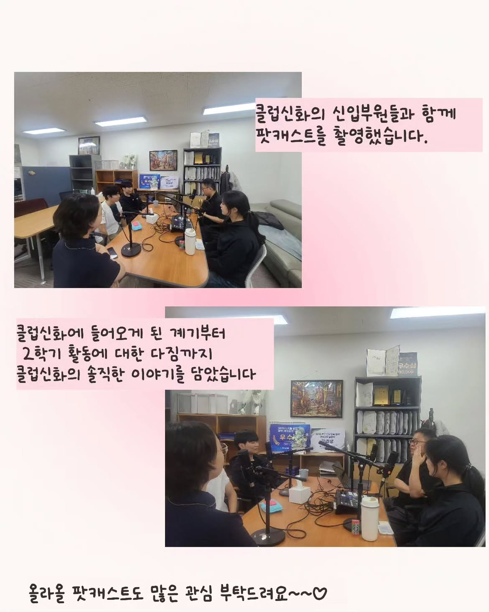
같이 열심히 공모전 준비하던 친구들과
꼼꼼히 피드백주신 오영삼 교수님 덕분에 올해 공모전에 3회 출전할 수 있었습니다.
사회복지 + 의공학

아이디어 기획형 | 개인으로 참여 | 웹 앱 제작, 제안서 작성
비만 예방을 위한 아동청소년용 웹 앱 테스트버전을 만들고 제출했습니다. 바이브코딩은 Antigravity로, 그림은 gemini로 생성하였습니다.
해당 공모전은 개인 출전으로, 오영삼 교수님의 피드백으로 완성하였습니다.
웹 앱 ‘오늘뭐입지?’ 프로토타입 개발 및 발표
오늘의 날씨에 따라
옷장 안에서 옷을 추천해주는 웹 앱
(새 탭에서 여는 걸 추천합니다)
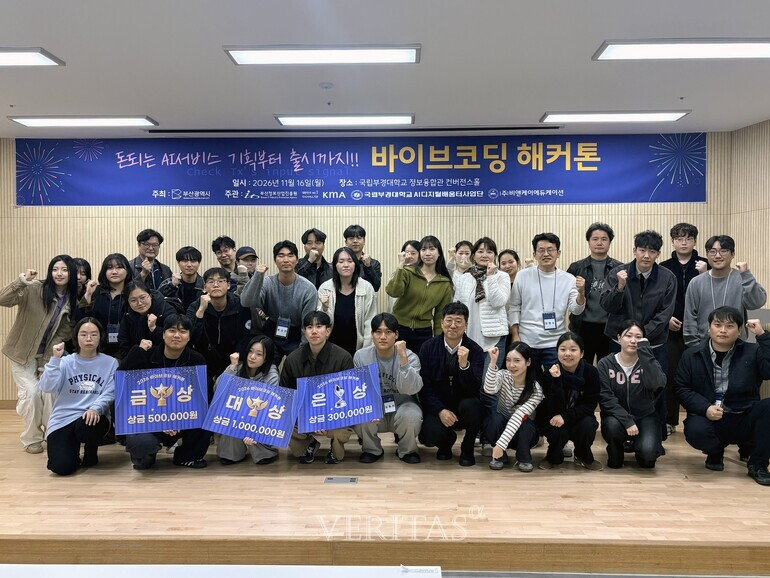
팀장을 맡음 | 통계 분석 및 웹 앱 제작, 제안서 검토
돌봄 데이터 표준화 포스터를 준비하며, 의료와 돌봄 현장의 정보를 잇는 일이 두 전공의 접점이 될 수 있음을 알게 됐다.
두 전공을 바탕으로 사람들의 일상과 삶의 질을 높이는 연구를 이어가고 싶다.
공모전 제출용 두 개와 대회용·개인용 웹 앱을 만들며, 아이디어를 다른 사람이 직접 써볼 수 있는 형태로 구현하는 법을 배웠다.
반복하는 작업을 줄여주는 웹 앱을 기획하고, 어떤 기능까지 구현할 수 있는지 직접 만들어보며 배우고 싶다.
탐구커뮤니티에서 팀원과 팀장을 모두 맡았다. 팀 활동을 기획하고 이끌면서, 역할을 나누고 서로의 속도를 맞추는 데 더 연습이 필요하다는 걸 깨달았다.
남은 조별과제에서는 내 기대와 다른 방식이나 속도도 받아들이고, 팀원들과 함께 끝까지 결과를 만들어가고 싶다.